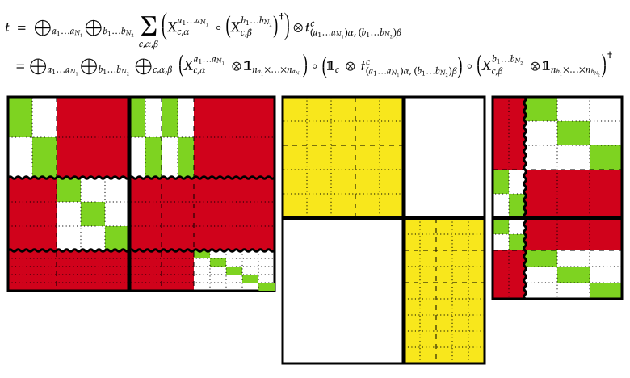
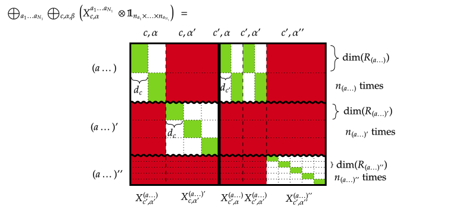

Constructing tensors and the TensorMap type
This page explains how to construct and access tensors in TensorKit.jl. As this is probably the most important part of the manual, we will also focus more strongly on the usage and interface, and less so on the underlying implementation. The only aspect of the implementation that we will address is the storage of the tensor data, as this is important to know how to create and initialize a tensor, but will in fact also shed light on how some of the methods work.
As mentioned, all tensors in TensorKit.jl are interpreted as linear maps (morphisms) from a domain (a ProductSpace{S, N₂}) to a codomain (another ProductSpace{S, N₁}), with the same S <: ElementarySpace that labels the type of spaces associated with the individual tensor indices. The overall type for all such tensor maps is AbstractTensorMap{T, S, N₁, N₂}. Note that we place information about the codomain before that of the domain. Indeed, we have already encountered the constructor for the concrete parametric type TensorMap in the form TensorMap(..., codomain, domain). This convention is opposite to the mathematical notation, e.g. $\mathrm{Hom}(W, V)$ or $f : W → V$, but originates from the fact that a normal matrix is also denoted as having size m × n or is constructed in Julia as Array(..., (m, n)), where the first integer m refers to the codomain being m- dimensional, and the second integer n to the domain being n-dimensional. This also explains why we have consistently used the symbol $W$ for spaces in the domain and $V$ for spaces in the codomain. A tensor map $t : (W_1 ⊗ … ⊗ W_{N_2}) → (V_1 ⊗ … ⊗ V_{N_1})$ will be created in Julia as TensorMap(..., V1 ⊗ ... ⊗ VN₁, W1 ⊗ ... ⊗ WN₂).
Furthermore, the abstract type AbstractTensor{T, S, N} is just a synonym for AbstractTensorMap{T, S, N, 0}, i.e. for tensor maps with an empty domain, which is equivalent to the unit of the monoidal category, or thus, the field of scalars $𝕜$.
Currently, AbstractTensorMap has three subtypes. TensorMap provides the actual implementation, where the data of the tensor is stored in a DenseArray (more specifically a DenseMatrix as will be explained below). AdjointTensorMap is a simple wrapper type to denote the adjoint of an existing TensorMap object. DiagonalTensorMap provides an efficient representation of diagonal tensor maps. In the future, additional types could be defined, to deal with sparse data, static data, etc...
Storage of tensor data
Before discussing how to construct and initialize a TensorMap, let us discuss what is meant by 'tensor data' and how it can efficiently and compactly be stored. Let us first discuss the case sectortype(S) == Trivial sector, i.e. the case of no symmetries. In that case the data of a tensor t = TensorMap(..., V1 ⊗ ... ⊗ VN₁, W₁ ⊗ ... ⊗ WN₂) can just be represented as a multidimensional array of size
(dim(V1), dim(V2), …, dim(VN₁), dim(W1), …, dim(WN₂))which can also be reshaped into a matrix of size
(dim(V1) * dim(V2) * … * dim(VN₁), dim(W1) * dim(W2) * … * dim(WN₂))and is really the matrix representation of the linear map that the tensor represents. In particular, given a second tensor t2 whose domain matches with the codomain of t, function composition amounts to multiplication of their corresponding data matrices. Similarly, tensor factorizations such as the singular value decomposition, which we discuss below, can act directly on this matrix representation.
One might wonder if it would not have been more natural to represent the tensor data as (dim(V1), dim(V2), …, dim(VN₁), dim(WN₂), …, dim(W1)) given how employing the duality naturally reverses the tensor product, as encountered with the interface of repartition for fusion trees. However, such a representation, when plainly reshaped to a matrix, would not have the above properties and would thus not constitute the matrix representation of the tensor in a compatible basis.
Now consider the case where sectortype(S) == I for some I which has FusionStyle(I) == UniqueFusion(), i.e. the representations of an Abelian group, e.g. I == Irrep[ℤ₂] or I == Irrep[U₁]. In this case, the tensor data is associated with sectors (a1, a2, …, aN₁) ∈ sectors(V1 ⊗ V2 ⊗ … ⊗ VN₁) and (b1, …, bN₂) ∈ sectors(W1 ⊗ … ⊗ WN₂) such that they fuse to a same common charge, i.e. (c = first(⊗(a1, …, aN₁))) == first(⊗(b1, …, bN₂)). The data associated with this takes the form of a multidimensional array with size (dim(V1, a1), …, dim(VN₁, aN₁), dim(W1, b1), …, dim(WN₂, bN₂)), or equivalently, a matrix with row size dim(V1, a1) * … * dim(VN₁, aN₁) == dim(codomain, (a1, …, aN₁)) and column size dim(W1, b1) * … * dim(WN₂, aN₂) == dim(domain, (b1, …, bN₂)).
However, there are multiple combinations of (a1, …, aN₁) giving rise to the same c, and so there is data associated with all of these, as well as all possible combinations of (b1, …, bN₂). Stacking all matrices for different (a1, …) and a fixed value of (b1, …) underneath each other, and for fixed value of (a1, …) and different values of (b1, …) next to each other, gives rise to a larger block matrix of all data associated with the central sector c. The size of this matrix is exactly (blockdim(codomain, c), blockdim(domain, c)) and these matrices are exactly the diagonal blocks whose existence is guaranteed by Schur's lemma, and which are labeled by the coupled sector c. Indeed, if we would represent the tensor map t as a matrix without explicitly using the symmetries, we could reorder the rows and columns to group data corresponding to sectors that fuse to the same c, and the resulting block diagonal representation would emerge. This basis transform is thus a permutation, which is a unitary operation, that will cancel or go through trivially for linear algebra operations such as composing tensor maps (matrix multiplication) or tensor factorizations such as a singular value decomposition. For such linear algebra operations, we can thus directly act on these large matrices, which correspond to the diagonal blocks that emerge after a basis transform, provided that the partition of the tensor indices in domain and codomain of the tensor are in line with our needs. For example, composing two tensor maps amounts to multiplying the matrices corresponding to the same c (provided that its subblocks labeled by the different combinations of sectors are ordered in the same way, which we guarantee by associating a canonical order with sectors). Henceforth, we refer to the blocks of a tensor map as those diagonal blocks, the existence of which is provided by Schur's lemma and which are labeled by the coupled sectors c. We directly concatenate these blocks as consecutive entries in a single larger DenseVector, together with metadata to retrieve a block by using the corresponding coupled sector c as key. For a given tensor t, we can access a specific block as block(t, c), whereas blocks(t) yields an iterator over pairs c => block(t, c).
The subblocks corresponding to a particular combination of sectors then correspond to a particular view for some range of the rows and some range of the columns, i.e. view(block(t, c), m₁:m₂, n₁:n₂) where the ranges m₁:m₂ associated with (a1, …, aN₁) and n₁:n₂ associated with (b₁, …, bN₂) are stored within the fields of the instance t of type TensorMap. This view can then lazily be reshaped to a multidimensional array, for which we rely on the package Strided.jl. Indeed, the data in this view is not contiguous, because the stride between the different columns is larger than the length of the columns. Nonetheless, this does not pose a problem and even as multidimensional array there is still a definite stride associated with each dimension.
When FusionStyle(I) isa MultipleFusion, things become slightly more complicated. Not only do (a1, …, aN₁) give rise to different coupled sectors c, there can be multiple ways in which they fuse to c. These different possibilities are enumerated by the iterator fusiontrees((a1, …, aN₁), c) and fusiontrees((b1, …, bN₂), c), and with each of those, there is tensor data that takes the form of a multidimensional array, or, after reshaping, a matrix of size (dim(codomain, (a1, …, aN₁)), dim(domain, (b1, …, bN₂)))). Again, we can stack all such matrices with the same value of f₁ ∈ fusiontrees((a1, …, aN₁), c) horizontally (as they all have the same number of rows), and with the same value of f₂ ∈ fusiontrees((b1, …, bN₂), c) vertically (as they have the same number of columns). What emerges is a large matrix of size (blockdim(codomain, c), blockdim(domain, c)) containing all the tensor data associated with the coupled sector c, where blockdim(P, c) = sum(dim(P, s) * length(fusiontrees(s, c)) for s in sectors(P)) for some instance P of ProductSpace. The tensor implementation does not distinguish between abelian or non-abelian sectors and still stores these matrices concatenated in a DenseVector, where each individual block is accessible via block(t, c).
At first sight, it might now be less clear what the relevance of this block is in relation to the full matrix representation of the tensor map, where the symmetry is not exploited. The essential interpretation is still the same. Schur's lemma now tells that there is a unitary basis transform which makes this matrix representation block diagonal, more specifically, of the form $⨁_{c} B_c ⊗ 𝟙_{c}$, where $B_c$ denotes block(t, c) and $𝟙_{c}$ is an identity matrix of size (dim(c), dim(c)). The reason for this extra identity is that the group representation is recoupled to act as $⨁_{c} 𝟙 ⊗ u_c(g)$ for all $g ∈ \mathsf{I}$, with $u_c(g)$ the matrix representation of group element $g$ according to the irrep $c$. In the abelian case, dim(c) == 1, i.e. all irreducible representations are one-dimensional and Schur's lemma only dictates that all off-diagonal blocks are zero. However, in this case the basis transform to the block diagonal representation is not simply a permutation matrix, but a more general unitary matrix composed of the different fusion trees. Indeed, let us denote the fusion trees f₁ ∈ fusiontrees((a1, …, aN₁), c) as $X^{a_1, …, a_{N₁}}_{c,α}$ where $α = (e_1, …, e_{N_1-2}; μ₁, …, μ_{N_1-1})$ is a collective label for the internal sectors e and the vertex degeneracy labels μ of a generic fusion tree, as discussed in the corresponding section. The tensor is then represented as

In this diagram, we have indicated how the tensor map can be rewritten in terms of a block diagonal matrix with a unitary matrix on its left and another unitary matrix (if domain and codomain are different) on its right. So the left and right matrices should actually have been drawn as squares. They represent the unitary basis transform. In this picture, red and white regions are zero. The center matrix is most easy to interpret. It is the block diagonal matrix $⨁_{c} B_c ⊗ 𝟙_{c}$ with diagonal blocks labeled by the coupled charge c, in this case it takes two values. Every single small square in between the dotted or dashed lines has size $d_c × d_c$ and corresponds to a single element of $B_c$, tensored with the identity $\mathrm{id}_c$. Instead of $B_c$, a more accurate labelling is $t^c_{(a_1 … a_{N₁})α, (b_1 … b_{N₂})β}$ where $α$ labels different fusion trees from $(a_1 … a_{N₁})$ to $c$. The dashed horizontal lines indicate regions corresponding to different fusion (actually splitting) trees, either because of different sectors $(a_1 … a_{N₁})$ or different labels $α$ within the same sector. Similarly, the dashed vertical lines define the border between regions of different fusion trees from the domain to c, either because of different sectors $(b_1 … b_{N₂})$ or a different label $β$.
To understand this better, we need to understand the basis transformation, e.g. on the left (codomain) side. In more detail, it is given by

Indeed, remembering that $V_i = ⨁_{a_i} R_{a_i} ⊗ ℂ^{n_{a_i}}$ with $R_{a_i}$ the representation space on which irrep $a_i$ acts (with dimension $\mathrm{dim}(a_i)$), we find
\[V_1 ⊗ … ⊗ V_{N_1} = ⨁_{a_1, …, a_{N₁}} (R_{a_1} ⊗ … ⊗ R_{a_{N_1}}) ⊗ ℂ^{n_{a_1} × … n_{a_{N_1}}}.\]
In the diagram above, the wiggly lines correspond to the direct sum over the different sectors $(a_1, …, a_{N₁})$, there depicted taking three possible values $(a…)$, $(a…)′$ and $(a…)′′$. The tensor product $(R_{a_1} ⊗ … ⊗ R_{a_{N_1}}) ⊗ ℂ^{n_{a_1} × … n_{a_{N_1}}}$ is depicted as $(R_{a_1} ⊗ … ⊗ R_{a_{N_1}})^{⊕ n_{a_1} × … n_{a_{N_1}}}$, i.e. as a direct sum of the spaces $R_{(a…)} = (R_{a_1} ⊗ … ⊗ R_{a_{N_1}})$ according to the dotted horizontal lines, which repeat $n_{(a…)} = n_{a_1} × … n_{a_{N_1}}$ times. In this particular example, $n_{(a…)}=2$, $n_{(a…)'}=3$ and $n_{(a…)''}=5$. The thick vertical line represents the separation between the two different coupled sectors, denoted as $c$ and $c'$. Dashed vertical lines represent different ways of reaching the coupled sector, corresponding to different α. In this example, the first sector $(a…)$ has one fusion tree to $c$, labeled by $c,α$, and two fusion trees to $c'$, labeled by $c',α$ and $c',α'$. The second sector has only a fusion tree to $c$, labeled by $c,α'$. The third sector only has a fusion tree to $c'$, labeled by $c', α''$. Finally then, because the fusion trees do not act on the spaces $ℂ^{n_{a_1} × … n_{a_{N_1}}}$, the dotted lines which represent the different $n_{(a…)} = n_{a_1} × … n_{a_{N_1}}$ dimensions are also drawn vertically. In particular, for a given sector $(a…)$ and a specific fusion tree $X^{(a…)}_{c,α} : R_{(a…)}→R_c$, the action is $X^{(a…)}_{c,α} ⊗ 𝟙_{n_{(a…)}}$, which corresponds to the diagonal green blocks in this drawing where the same matrix $X^{(a…)}_{c,α}$ (the fusion tree) is repeated along the diagonal. Note that the fusion tree is not a vector or single column, but a matrix with number of rows equal to $\mathrm{dim}(R_{(a\ldots)}) = d_{a_1} d_{a_2} … d_{a_{N_1}}$ and number of columns equal to $d_c$. A similar interpretation can be given to the basis transform on the right, by taking its adjoint. In this particular example, it has two different combinations of sectors $(b…)$ and $(b…)'$, where both have a single fusion tree to $c$ as well as to $c'$, and $n_{(b…)}=2$, $n_{(b…)'}=3$.
Note that we never explicitly store or act with the basis transformations on the left and the right. For composing tensor maps (i.e. multiplying them), these basis transforms just cancel, whereas for tensor factorizations they just go through trivially. They transform non-trivially when reshuffling the tensor indices, both within or in between the domain and codomain. For this, however, we can completely rely on the manipulations of fusion trees to implicitly compute the effect of the basis transform and construct the new blocks $B_c$ that result with respect to the new basis.
Hence, as before, we only store the diagonal blocks $B_c$ of size (blockdim(codomain(t), c), blockdim(domain(t), c)) as a DenseMatrix, accessible via block(t, c). Within this matrix, there are regions of the form view(block(t, c), m₁:m₂, n₁:n₂) that correspond to the data $t^c_{(a_1 … a_{N₁})α, (b_1 … b_{N₂})β}$ associated with a pair of fusion trees $X^{(a_1 … a_{N₁})}_{c,α}$ and $X^{(b_1 … b_{N₂})}_{c,β}$, henceforth again denoted as f₁ and f₂, with f₁.coupled == f₂.coupled == c. The ranges where this subblock is living are managed within the tensor implementation, and these subblocks can be accessed via t[f₁, f₂], and is returned as a StridedArray of size $n_{a_1} × n_{a_2} × … × n_{a_{N_1}} × n_{b_1} × … n_{b_{N₂}}$, or in code, (dim(V1, a1), dim(V2, a2), …, dim(VN₁, aN₁), dim(W1, b1), …, dim(WN₂, bN₂)). While the implementation does not distinguish between FusionStyle isa UniqueFusion or FusionStyle isa MultipleFusion, in the former case the fusion tree is completely characterized by the uncoupled sectors, and so the subblocks can also be accessed as t[(a1, …, aN₁, b1, …, bN₂)]. When there is no symmetry at all, i.e. sectortype(t) == Trivial, t[] returns the raw tensor data as a StridedArray of size (dim(V1), …, dim(VN₁), dim(W1), …, dim(WN₂)), whereas block(t, Trivial()) returns the same data as a DenseMatrix of size (dim(V1) * … * dim(VN₁), dim(W1) * … * dim(WN₂)).
Constructing tensor maps and accessing tensor data
Having learned how a tensor is represented and stored, we can now discuss how to create tensors and tensor maps. From hereon, we focus purely on the interface rather than the implementation.
Random and uninitialized tensor maps
The most convenient set of constructors are those that construct tensors or tensor maps with random or uninitialized data. They take the form
f(codomain, domain = one(codomain))
f(eltype::Type{<:Number}, codomain, domain = one(codomain))
TensorMap{eltype::Type{<:Number}}(undef, codomain, domain = one(codomain))
Tensor{eltype::Type{<:Number}}(undef, codomain)Here, f is any of the typical functions from Base that normally create arrays, namely zeros, ones, rand, randn and Random.randexp. Remember that one(codomain) is the empty ProductSpace{S, 0}(). The third and fourth calling syntax use the UndefInitializer from Julia Base and generates a TensorMap with uninitialized data, which can thus contain NaNs.
In all of these constructors, the last two arguments can be replaced by domain → codomain or codomain ← domain, where the arrows are obtained as \rightarrow+TAB and \leftarrow+TAB and create a HomSpace as explained in the section on Spaces of morphisms. Some examples are perhaps in order
julia> t1 = randn(ℂ^2 ⊗ ℂ^3, ℂ^2)2×3←2 TensorMap{Float64, ComplexSpace, 2, 1, Vector{Float64}}: codomain: (ℂ^2 ⊗ ℂ^3) domain: ⊗(ℂ^2) blocks: * Trivial() => 6×2 reshape(view(::Vector{Float64}, 1:12), 6, 2) with eltype Float64: -1.46314 0.387347 -1.02735 0.243347 -0.918463 -0.879715 0.320342 0.497215 -0.33807 -0.399479 1.06807 1.06153julia> t2 = zeros(Float32, ℂ^2 ⊗ ℂ^3 ← ℂ^2)2×3←2 TensorMap{Float32, ComplexSpace, 2, 1, Vector{Float32}}: codomain: (ℂ^2 ⊗ ℂ^3) domain: ⊗(ℂ^2) blocks: * Trivial() => 6×2 reshape(view(::Vector{Float32}, 1:12), 6, 2) with eltype Float32: 0.0 0.0 0.0 0.0 0.0 0.0 0.0 0.0 0.0 0.0 0.0 0.0julia> t3 = TensorMap{Float64}(undef, ℂ^2 → ℂ^2 ⊗ ℂ^3)2×3←2 TensorMap{Float64, ComplexSpace, 2, 1, Vector{Float64}}: codomain: (ℂ^2 ⊗ ℂ^3) domain: ⊗(ℂ^2) blocks: * Trivial() => 6×2 reshape(view(::Vector{Float64}, 1:12), 6, 2) with eltype Float64: 6.91184e-310 1.08859e-311 6.91184e-310 7.74682e-304 6.91184e-310 6.91184e-310 6.9118e-310 6.91184e-310 2.2984e-320 6.91184e-310 1.9409e-319 6.9118e-310julia> domain(t1) == domain(t2) == domain(t3)truejulia> codomain(t1) == codomain(t2) == codomain(t3)truejulia> disp(x) = show(IOContext(Core.stdout, :compact=>false), "text/plain", trunc.(x; digits = 3));julia> t1[] |> disp2×3×2 StridedViews.StridedView{Float64, 3, GenericMemory{:not_atomic, Float64, Core.AddrSpace{Core}(0x00)}, typeof(identity)}: [:, :, 1] = -1.463 -0.918 -0.338 -1.027 0.32 1.068 [:, :, 2] = 0.387 -0.879 -0.399 0.243 0.497 1.061julia> block(t1, Trivial()) |> disp6×2 Array{Float64, 2}: -1.463 0.387 -1.027 0.243 -0.918 -0.879 0.32 0.497 -0.338 -0.399 1.068 1.061julia> reshape(t1[], dim(codomain(t1)), dim(domain(t1))) |> disp6×2 Array{Float64, 2}: -1.463 0.387 -1.027 0.243 -0.918 -0.879 0.32 0.497 -0.338 -0.399 1.068 1.061
Finally, all constructors can also be replaced by Tensor(..., codomain), in which case the domain is assumed to be the empty ProductSpace{S, 0}(), which can easily be obtained as one(codomain). Indeed, the empty product space is the unit object of the monoidal category, equivalent to the field of scalars 𝕜, and thus the multiplicative identity (especially since * also acts as tensor product on vector spaces).
The matrices created by f are the matrices $B_c$ discussed above, i.e. those returned by block(t, c). Only numerical matrices of type DenseMatrix are accepted, which in practice just means Julia's intrinsic Matrix{T} for some T <: Number. Ongoing work extends this to support for CuMatrix from CuArrays.jl to harness GPU computing power, and future work might include distributed arrays.
Support for static or sparse data is currently unavailable, and if it would be implemented, it would likely lead to new subtypes of AbstractTensorMap which are distinct from TensorMap. Future implementations of e.g. SparseTensorMap or StaticTensorMap could be useful.
Tensor maps from existing data
To create a TensorMap with existing data, one can use the aforementioned form but with the function f replaced with the actual data, i.e. TensorMap(data, codomain, domain) or any of its equivalents.
Here, data can be of two types. It can be a dictionary (any AbstractDict subtype) which has blocksectors c of type sectortype(codomain) as keys, and the corresponding matrix blocks as value, i.e. data[c] is some DenseMatrix of size (blockdim(codomain, c), blockdim(domain, c)).
For those space types for which a TensorMap can be converted to a plain multidimensional array, the data can also be a general DenseArray, either of rank N₁ + N₂ and with matching size (dims(codomain)..., dims(domain)...), or just as a DenseMatrix with size (dim(codomain), dim(domain)). This is true in particular if the sector type is Trivial, e.g. for CartesianSpace or ComplexSpace. Then the data array is just reshaped into matrix form and referred to as such in the resulting TensorMap instance. When spacetype is GradedSpace, the TensorMap constructor will try to reconstruct the tensor data such that the resulting tensor t satisfies data == convert(Array, t). This might not be possible, if the data does not respect the symmetry structure. This procedure can be sketched using a simple physical example, namely the SWAP gate on two qubits,
\[\begin{align*} \mathrm{SWAP}: \mathbb{C}^2 \otimes \mathbb{C}^2 & \to \mathbb{C}^2 \otimes \mathbb{C}^2\\ |i\rangle \otimes |j\rangle &\mapsto |j\rangle \otimes |i\rangle. \end{align*}\]
This operator can be rewritten in terms of the familiar Heisenberg exchange interaction $\vec{S}_i \cdot \vec{S}_j$ as
\[\mathrm{SWAP} = 2 \vec{S}_i \cdot \vec{S}_j + \frac{1}{2} 𝟙,\]
where $\vec{S} = (S^x, S^y, S^z)$ and the spin-1/2 generators of SU₂ $S^k$ are defined defined in terms of the $2 \times 2$ Pauli matrices $\sigma^k$ as $S^k = \frac{1}{2}\sigma^k$. The SWAP gate can be realized as a rank-4 TensorMap in the following way:
julia> # encode the matrix elements of the swap gate into a rank-4 array, where the first two # indices correspond to the codomain and the last two indices correspond to the domain data = zeros(2,2,2,2)2×2×2×2 Array{Float64, 4}: [:, :, 1, 1] = 0.0 0.0 0.0 0.0 [:, :, 2, 1] = 0.0 0.0 0.0 0.0 [:, :, 1, 2] = 0.0 0.0 0.0 0.0 [:, :, 2, 2] = 0.0 0.0 0.0 0.0julia> # the swap gate then maps the last two indices on the first two in reversed order data[1,1,1,1] = data[2,2,2,2] = data[1,2,2,1] = data[2,1,1,2] = 11julia> V1 = ℂ^2 # generic qubit hilbert spaceℂ^2julia> t1 = TensorMap(data, V1 ⊗ V1, V1 ⊗ V1)2×2←2×2 TensorMap{Float64, ComplexSpace, 2, 2, Vector{Float64}}: codomain: (ℂ^2 ⊗ ℂ^2) domain: (ℂ^2 ⊗ ℂ^2) blocks: * Trivial() => 4×4 reshape(view(::Vector{Float64}, 1:16), 4, 4) with eltype Float64: 1.0 0.0 0.0 0.0 0.0 0.0 1.0 0.0 0.0 1.0 0.0 0.0 0.0 0.0 0.0 1.0julia> V2 = SU2Space(1/2=>1) # hilbert space of an actual spin-1/2 particle, respecting symmetryRep[SU₂](…) of dim 2: 1/2 => 1julia> t2 = TensorMap(data, V2 ⊗ V2, V2 ⊗ V2)2×2←2×2 TensorMap{Float64, Rep[SU₂], 2, 2, Vector{Float64}}: codomain: (Rep[SU₂](1/2 => 1) ⊗ Rep[SU₂](1/2 => 1)) domain: (Rep[SU₂](1/2 => 1) ⊗ Rep[SU₂](1/2 => 1)) blocks: * Irrep[SU₂](0) => 1×1 reshape(view(::Vector{Float64}, 1:1), 1, 1) with eltype Float64: -1.0000000000000002 * Irrep[SU₂](1) => 1×1 reshape(view(::Vector{Float64}, 2:2), 1, 1) with eltype Float64: 0.9999999999999997julia> V3 = U1Space(1/2=>1,-1/2=>1) # restricted space that only uses the `σ_z` rotation symmetryRep[U₁](…) of dim 2: 1/2 => 1 -1/2 => 1julia> t3 = TensorMap(data, V3 ⊗ V3, V3 ⊗ V3)2×2←2×2 TensorMap{Float64, Rep[U₁], 2, 2, Vector{Float64}}: codomain: (Rep[U₁](1/2 => 1, -1/2 => 1) ⊗ Rep[U₁](1/2 => 1, -1/2 => 1)) domain: (Rep[U₁](1/2 => 1, -1/2 => 1) ⊗ Rep[U₁](1/2 => 1, -1/2 => 1)) blocks: * Irrep[U₁](0) => 2×2 reshape(view(::Vector{Float64}, 1:4), 2, 2) with eltype Float64: 0.0 1.0 1.0 0.0 * Irrep[U₁](1) => 1×1 reshape(view(::Vector{Float64}, 5:5), 1, 1) with eltype Float64: 1.0 * Irrep[U₁](-1) => 1×1 reshape(view(::Vector{Float64}, 6:6), 1, 1) with eltype Float64: 1.0julia> for (c,b) in blocks(t3) println("Data for block $c :") disp(b) println() endData for block Irrep[U₁](0) : 2×2 Array{Float64, 2}: 0.0 1.0 1.0 0.0 Data for block Irrep[U₁](1) : 1×1 Array{Float64, 2}: 1.0 Data for block Irrep[U₁](-1) : 1×1 Array{Float64, 2}: 1.0
Hence, we recognize that the exchange interaction has eigenvalue $-1$ in the coupled spin zero sector (SU2Irrep(0)), and eigenvalue $+1$ in the coupled spin 1 sector (SU2Irrep(1)). Using Irrep[U₁] instead, we observe that both coupled charge U1Irrep(+1) and U1Irrep(-1) have eigenvalue $+1$. The coupled charge U1Irrep(0) sector is two-dimensional, and has an eigenvalue $+1$ and an eigenvalue $-1$.
To construct the proper data in more complicated cases, one has to know where to find each sector in the range 1:dim(V) of every index i with associated space V, as well as the internal structure of the representation space when the corresponding sector c has dim(c) > 1, i.e. in the case of FusionStyle(c) isa MultipleFusion. Currently, the only non-abelian sectors are Irrep[SU₂] and Irrep[CU₁], for which the internal structure is the natural one.
There are some tools available to facilitate finding the proper range of sector c in space V, namely axes(V, c). This also works on a ProductSpace, with a tuple of sectors. An example
julia> V = SU2Space(0=>3, 1=>2, 2=>1)Rep[SU₂](…) of dim 14: 0 => 3 1 => 2 2 => 1julia> P = V ⊗ V ⊗ V(Rep[SU₂](0 => 3, 1 => 2, 2 => 1) ⊗ Rep[SU₂](0 => 3, 1 => 2, 2 => 1) ⊗ Rep[SU₂](0 => 3, 1 => 2, 2 => 1))julia> axes(P, (SU2Irrep(1), SU2Irrep(0), SU2Irrep(2)))(4:9, 1:3, 10:14)
Note that the length of the range is the degeneracy dimension of that sector, times the dimension of the internal representation space, i.e. the quantum dimension of that sector.
Assigning block data after initialization
In order to avoid having to know the internal structure of each representation space to properly construct the full data array, it is often simpler to assign the block data directly after initializing an all zero TensorMap with the correct spaces. While this may seem more difficult at first sight since it requires knowing the exact entries associated to each valid combination of domain uncoupled sectors, coupled sector and codomain uncoupled sectors, this is often a far more natural procedure in practice.
A first option is to directly set the full matrix block for each coupled sector in the TensorMap. For the example with $\mathsf{U}_1$ symmetry, this can be done as
julia> t4 = zeros(V3 ⊗ V3, V3 ⊗ V3);julia> block(t4, U1Irrep(0)) .= [1 0; 0 1];julia> block(t4, U1Irrep(1)) .= [1;;];julia> block(t4, U1Irrep(-1)) .= [1;;];julia> for (c, b) in blocks(t4) println("Data for block $c :") disp(b) println() endData for block Irrep[U₁](0) : 2×2 Array{Float64, 2}: 1.0 0.0 0.0 1.0 Data for block Irrep[U₁](1) : 1×1 Array{Float64, 2}: 1.0 Data for block Irrep[U₁](-1) : 1×1 Array{Float64, 2}: 1.0
While this indeed does not require considering the internal structure of the representation spaces, it still requires knowing the precise row and column indices corresponding to each set of uncoupled sectors in the codomain and domain respectively to correctly assign the nonzero entries in each block.
Perhaps the most natural way of constructing a particular TensorMap is to directly assign the data slices for each splitting - fusion tree pair using the fusiontrees(::TensorMap) method. This returns an iterator over all tuples (f₁, f₂) of splitting - fusion tree pairs corresponding to all ways in which the set of domain uncoupled sectors can fuse to a coupled sector and split back into the set of codomain uncoupled sectors. By directly setting the corresponding data slice t[f₁, f₂] of size (dims(codomain(t), f₁.uncoupled)..., dims(domain(t), f₂.uncoupled)...), we can construct all the block data without worrying about the internal ordering of row and column indices in each block. In addition, the corresponding value of each fusion tree slice is often directly informed by the object we are trying to construct in the first place. For example, in order to construct the Heisenberg exchange interaction on two spin-1/2 particles $i$ and $j$ as an SU₂ symmetric TensorMap, we can make use of the observation that
\[\vec{S}_i \cdot \vec{S}_j = \frac{1}{2} \left( \left( \vec{S}_i \cdot \vec{S}_j \right)^2 - \vec{S}_i^2 - \vec{S}_j^2 \right).\]
Recalling some basic group theory, we know that the quadratic Casimir of SU₂, $\vec{S}^2$, has a well-defined eigenvalue $j(j+1)$ on every irrep of spin $j$. From the above expressions, we can therefore directly read off the eigenvalues of the SWAP gate in terms of this Casimir eigenvalue on the domain uncoupled sectors and the coupled sector. This gives us exactly the prescription we need to assign the data slice corresponding to each splitting - fusion tree pair:
julia> C(s::SU2Irrep) = s.j * (s.j + 1)C (generic function with 1 method)julia> t5 = zeros(V2 ⊗ V2, V2 ⊗ V2);julia> for (f₁, f₂) in fusiontrees(t5) t5[f₁, f₂] .= C(f₂.coupled) - C(f₂.uncoupled[1]) - C(f₂.uncoupled[2]) + 1/2 endjulia> for (c, b) in blocks(t5) println("Data for block $c :") disp(b) println() endData for block Irrep[SU₂](0) : 1×1 Array{Float64, 2}: -1.0 Data for block Irrep[SU₂](1) : 1×1 Array{Float64, 2}: 1.0
Constructing similar tensors
A third way to construct a TensorMap instance is to use Base.similar, i.e.
similar(t [, T::Type{<:Number}, codomain, domain])where T is a possibly different eltype for the tensor data, and codomain and domain optionally define a new codomain and domain for the resulting tensor. By default, these values just take the value from the input tensor t. The result will be a new TensorMap instance, with undef data, but whose data is stored in the same subtype of DenseVector (e.g. Vector or CuVector or ...) as t. In particular, this uses the methods storagetype(t) and TensorKit.similarstoragetype(t, T).
Special purpose constructors
Finally, there are methods zero, one, id, isomorphism, unitary and isometry to create specific new tensors. Tensor maps behave as vectors and can be added (if they have the same domain and codomain); zero(t) is the additive identity, i.e. a TensorMap instance where all entries are zero. For a t::TensorMap with domain(t) == codomain(t), i.e. an endomorphism, one(t) creates the identity tensor, i.e. the identity under composition. As discussed in the section on linear algebra operations, we denote composition of tensor maps with the multiplication operator *, such that one(t) is the multiplicative identity. Similarly, it can be created as id(V) with V the relevant vector space, e.g. one(t) == id(domain(t)). The identity tensor is currently represented with dense data, and one can use id(A::Type{<:DenseVector}, V) to specify the type of DenseVector (and its eltype), e.g. A = Vector{Float64}. Finally, it often occurs that we want to construct a specific isomorphism between two spaces that are isomorphic but not equal, and for which there is no canonical choice. Hereto, one can use the method u = isomorphism([A::Type{<:DenseVector}, ] codomain, domain), which will explicitly check that the domain and codomain are isomorphic, and return an error otherwise. Again, an optional first argument can be given to specify the specific type of DenseVector that is currently used to store the rather trivial data of this tensor. If InnerProductStyle(u) <: EuclideanProduct, the same result can be obtained with the method u = unitary([A::Type{<:DenseVector}, ] codomain, domain). Note that reversing the domain and codomain yields the inverse morphism, which in the case of EuclideanProduct coincides with the adjoint morphism, i.e. isomorphism(A, domain, codomain) == adjoint(u) == inv(u), where inv and adjoint will be further discussed below. Finally, if two spaces V1 and V2 are such that V2 can be embedded in V1, i.e. there exists an inclusion with a left inverse, and furthermore they represent tensor products of some ElementarySpace with EuclideanProduct, the function w = isometry([A::Type{<:DenseMatrix}, ], V1, V2) creates one specific isometric embedding, such that adjoint(w) * w == id(V2) and w * adjoint(w) is some hermitian idempotent (a.k.a. orthogonal projector) acting on V1. An error will be thrown if such a map cannot be constructed for the given domain and codomain.
Let's conclude this section with some examples with GradedSpace.
julia> V1 = ℤ₂Space(0 => 3, 1 => 2)Rep[ℤ₂](…) of dim 5: 0 => 3 1 => 2julia> V2 = ℤ₂Space(0 => 2, 1 => 1)Rep[ℤ₂](…) of dim 3: 0 => 2 1 => 1julia> # First a `TensorMap{ℤ₂Space, 1, 1}` m = randn(V1, V2)5←3 TensorMap{Float64, Rep[ℤ₂], 1, 1, Vector{Float64}}: codomain: ⊗(Rep[ℤ₂](0 => 3, 1 => 2)) domain: ⊗(Rep[ℤ₂](0 => 2, 1 => 1)) blocks: * Irrep[ℤ₂](0) => 3×2 reshape(view(::Vector{Float64}, 1:6), 3, 2) with eltype Float64: -0.156455 0.110895 -0.240635 0.96775 0.897525 -1.43426 * Irrep[ℤ₂](1) => 2×1 reshape(view(::Vector{Float64}, 7:8), 2, 1) with eltype Float64: -1.819276982029196 -0.09360179673983951julia> convert(Array, m) |> disp5×3 Array{Float64, 2}: -0.156 0.11 0.0 -0.24 0.967 0.0 0.897 -1.434 0.0 0.0 0.0 -1.819 0.0 0.0 -0.093julia> # compare with: block(m, Irrep[ℤ₂](0)) |> disp3×2 Array{Float64, 2}: -0.156 0.11 -0.24 0.967 0.897 -1.434julia> block(m, Irrep[ℤ₂](1)) |> disp2×1 Array{Float64, 2}: -1.819 -0.093julia> # Now a `TensorMap{ℤ₂Space, 2, 2}` t = randn(V1 ⊗ V1, V2 ⊗ V2')5×5←3×3 TensorMap{Float64, Rep[ℤ₂], 2, 2, Vector{Float64}}: codomain: (Rep[ℤ₂](0 => 3, 1 => 2) ⊗ Rep[ℤ₂](0 => 3, 1 => 2)) domain: (Rep[ℤ₂](0 => 2, 1 => 1) ⊗ Rep[ℤ₂](0 => 2, 1 => 1)') blocks: * Irrep[ℤ₂](0) => 13×5 reshape(view(::Vector{Float64}, 1:65), 13, 5) with eltype Float64: 1.08245 -0.395403 -0.315078 -1.36564 -1.1303 -0.0914406 -1.38415 -0.507748 -0.155556 -0.100764 -1.86189 -1.56327 0.636864 1.43817 -1.37312 ⋮ -0.144219 0.179113 -0.537831 -0.655857 1.28878 -0.208765 0.992293 0.393965 -2.04632 -0.0480509 0.02582 -1.58455 0.76864 1.08792 -2.49983 * Irrep[ℤ₂](1) => 12×4 reshape(view(::Vector{Float64}, 66:113), 12, 4) with eltype Float64: 0.271761 -1.5312 1.67957 0.575766 -0.863628 0.113288 0.757982 0.447781 -1.51295 -0.790844 0.332137 -1.06419 ⋮ -1.3092 0.494497 2.4588 0.132044 -2.28366 -0.503796 -0.89513 -0.594978 0.438314 0.68452 0.151549 -1.6631julia> (array = convert(Array, t)) |> disp5×5×3×3 Array{Float64, 4}: [:, :, 1, 1] = 1.082 0.348 0.191 0.0 0.0 -0.091 -2.817 -0.253 0.0 0.0 -1.861 -0.659 0.963 0.0 0.0 0.0 0.0 0.0 0.209 -0.208 0.0 0.0 0.0 -0.144 0.025 [:, :, 2, 1] = -0.395 -0.577 -0.055 0.0 0.0 -1.384 3.593 1.025 0.0 0.0 -1.563 0.757 0.306 0.0 0.0 0.0 0.0 0.0 0.872 0.992 0.0 0.0 0.0 0.179 -1.584 [:, :, 3, 1] = 0.0 0.0 0.0 0.539 -1.309 0.0 0.0 0.0 1.479 -2.283 0.0 0.0 0.0 0.175 0.438 0.271 -1.512 -0.383 0.0 0.0 -0.863 0.688 -0.145 0.0 0.0 [:, :, 1, 2] = -0.315 -0.371 0.065 0.0 0.0 -0.507 -0.26 -2.438 0.0 0.0 0.636 1.465 -0.157 0.0 0.0 0.0 0.0 0.0 -1.84 0.393 0.0 0.0 0.0 -0.537 0.768 [:, :, 2, 2] = -1.365 -0.945 -0.949 0.0 0.0 -0.155 1.129 -0.603 0.0 0.0 1.438 -0.885 -0.263 0.0 0.0 0.0 0.0 0.0 0.827 -2.046 0.0 0.0 0.0 -0.655 1.087 [:, :, 3, 2] = 0.0 0.0 0.0 0.522 0.494 0.0 0.0 0.0 -0.584 -0.503 0.0 0.0 0.0 0.659 0.684 -1.531 -0.79 1.404 0.0 0.0 0.113 1.328 2.049 0.0 0.0 [:, :, 1, 3] = 0.0 0.0 0.0 -1.769 2.458 0.0 0.0 0.0 -1.069 -0.895 0.0 0.0 0.0 -0.204 0.151 1.679 0.332 -0.824 0.0 0.0 0.757 -0.122 0.255 0.0 0.0 [:, :, 2, 3] = 0.0 0.0 0.0 -0.679 0.132 0.0 0.0 0.0 -1.039 -0.594 0.0 0.0 0.0 0.568 -1.663 0.575 -1.064 -0.906 0.0 0.0 0.447 0.352 -0.242 0.0 0.0 [:, :, 3, 3] = -1.13 -1.352 0.858 0.0 0.0 -0.1 0.465 0.077 0.0 0.0 -1.373 0.587 -0.423 0.0 0.0 0.0 0.0 0.0 -0.323 -0.048 0.0 0.0 0.0 1.288 -2.499julia> d1 = dim(codomain(t))25julia> d2 = dim(domain(t))9julia> (matrix = reshape(array, d1, d2)) |> disp25×9 Array{Float64, 2}: 1.082 -0.395 0.0 -0.315 -1.365 0.0 0.0 0.0 -1.13 -0.091 -1.384 0.0 -0.507 -0.155 0.0 0.0 0.0 -0.1 -1.861 -1.563 0.0 0.636 1.438 0.0 0.0 0.0 -1.373 0.0 0.0 0.271 0.0 0.0 -1.531 1.679 0.575 0.0 0.0 0.0 -0.863 0.0 0.0 0.113 0.757 0.447 0.0 0.348 -0.577 0.0 -0.371 -0.945 0.0 0.0 0.0 -1.352 -2.817 3.593 0.0 -0.26 1.129 0.0 0.0 0.0 0.465 -0.659 0.757 0.0 1.465 -0.885 0.0 0.0 0.0 0.587 0.0 0.0 -1.512 0.0 0.0 -0.79 0.332 -1.064 0.0 0.0 0.0 0.688 0.0 0.0 1.328 -0.122 0.352 0.0 0.191 -0.055 0.0 0.065 -0.949 0.0 0.0 0.0 0.858 -0.253 1.025 0.0 -2.438 -0.603 0.0 0.0 0.0 0.077 0.963 0.306 0.0 -0.157 -0.263 0.0 0.0 0.0 -0.423 0.0 0.0 -0.383 0.0 0.0 1.404 -0.824 -0.906 0.0 0.0 0.0 -0.145 0.0 0.0 2.049 0.255 -0.242 0.0 0.0 0.0 0.539 0.0 0.0 0.522 -1.769 -0.679 0.0 0.0 0.0 1.479 0.0 0.0 -0.584 -1.069 -1.039 0.0 0.0 0.0 0.175 0.0 0.0 0.659 -0.204 0.568 0.0 0.209 0.872 0.0 -1.84 0.827 0.0 0.0 0.0 -0.323 -0.144 0.179 0.0 -0.537 -0.655 0.0 0.0 0.0 1.288 0.0 0.0 -1.309 0.0 0.0 0.494 2.458 0.132 0.0 0.0 0.0 -2.283 0.0 0.0 -0.503 -0.895 -0.594 0.0 0.0 0.0 0.438 0.0 0.0 0.684 0.151 -1.663 0.0 -0.208 0.992 0.0 0.393 -2.046 0.0 0.0 0.0 -0.048 0.025 -1.584 0.0 0.768 1.087 0.0 0.0 0.0 -2.499julia> (u = reshape(convert(Array, unitary(codomain(t), fuse(codomain(t)))), d1, d1)) |> disp25×25 Array{Float64, 2}: 1.0 0.0 0.0 0.0 0.0 0.0 0.0 0.0 0.0 0.0 0.0 0.0 0.0 0.0 0.0 0.0 0.0 0.0 0.0 0.0 0.0 0.0 0.0 0.0 0.0 0.0 1.0 0.0 0.0 0.0 0.0 0.0 0.0 0.0 0.0 0.0 0.0 0.0 0.0 0.0 0.0 0.0 0.0 0.0 0.0 0.0 0.0 0.0 0.0 0.0 0.0 0.0 1.0 0.0 0.0 0.0 0.0 0.0 0.0 0.0 0.0 0.0 0.0 0.0 0.0 0.0 0.0 0.0 0.0 0.0 0.0 0.0 0.0 0.0 0.0 0.0 0.0 0.0 0.0 0.0 0.0 0.0 0.0 0.0 0.0 0.0 0.0 0.0 1.0 0.0 0.0 0.0 0.0 0.0 0.0 0.0 0.0 0.0 0.0 0.0 0.0 0.0 0.0 0.0 0.0 0.0 0.0 0.0 0.0 0.0 0.0 0.0 0.0 0.0 1.0 0.0 0.0 0.0 0.0 0.0 0.0 0.0 0.0 0.0 0.0 0.0 0.0 0.0 1.0 0.0 0.0 0.0 0.0 0.0 0.0 0.0 0.0 0.0 0.0 0.0 0.0 0.0 0.0 0.0 0.0 0.0 0.0 0.0 0.0 0.0 0.0 0.0 0.0 0.0 1.0 0.0 0.0 0.0 0.0 0.0 0.0 0.0 0.0 0.0 0.0 0.0 0.0 0.0 0.0 0.0 0.0 0.0 0.0 0.0 0.0 0.0 0.0 0.0 0.0 0.0 1.0 0.0 0.0 0.0 0.0 0.0 0.0 0.0 0.0 0.0 0.0 0.0 0.0 0.0 0.0 0.0 0.0 0.0 0.0 0.0 0.0 0.0 0.0 0.0 0.0 0.0 0.0 0.0 0.0 0.0 0.0 0.0 0.0 0.0 0.0 1.0 0.0 0.0 0.0 0.0 0.0 0.0 0.0 0.0 0.0 0.0 0.0 0.0 0.0 0.0 0.0 0.0 0.0 0.0 0.0 0.0 0.0 0.0 0.0 0.0 0.0 1.0 0.0 0.0 0.0 0.0 0.0 0.0 0.0 0.0 0.0 0.0 0.0 0.0 0.0 0.0 1.0 0.0 0.0 0.0 0.0 0.0 0.0 0.0 0.0 0.0 0.0 0.0 0.0 0.0 0.0 0.0 0.0 0.0 0.0 0.0 0.0 0.0 0.0 0.0 0.0 0.0 1.0 0.0 0.0 0.0 0.0 0.0 0.0 0.0 0.0 0.0 0.0 0.0 0.0 0.0 0.0 0.0 0.0 0.0 0.0 0.0 0.0 0.0 0.0 0.0 0.0 0.0 1.0 0.0 0.0 0.0 0.0 0.0 0.0 0.0 0.0 0.0 0.0 0.0 0.0 0.0 0.0 0.0 0.0 0.0 0.0 0.0 0.0 0.0 0.0 0.0 0.0 0.0 0.0 0.0 0.0 0.0 0.0 0.0 0.0 0.0 1.0 0.0 0.0 0.0 0.0 0.0 0.0 0.0 0.0 0.0 0.0 0.0 0.0 0.0 0.0 0.0 0.0 0.0 0.0 0.0 0.0 0.0 0.0 0.0 0.0 0.0 1.0 0.0 0.0 0.0 0.0 0.0 0.0 0.0 0.0 0.0 0.0 0.0 0.0 0.0 0.0 0.0 0.0 0.0 0.0 0.0 0.0 0.0 0.0 0.0 0.0 0.0 1.0 0.0 0.0 0.0 0.0 0.0 0.0 0.0 0.0 0.0 0.0 0.0 0.0 0.0 0.0 0.0 0.0 0.0 0.0 0.0 0.0 0.0 0.0 0.0 0.0 0.0 1.0 0.0 0.0 0.0 0.0 0.0 0.0 0.0 0.0 0.0 0.0 0.0 0.0 0.0 0.0 0.0 0.0 0.0 0.0 0.0 0.0 0.0 0.0 0.0 0.0 0.0 1.0 0.0 0.0 0.0 0.0 0.0 0.0 0.0 0.0 0.0 0.0 0.0 0.0 1.0 0.0 0.0 0.0 0.0 0.0 0.0 0.0 0.0 0.0 0.0 0.0 0.0 0.0 0.0 0.0 0.0 0.0 0.0 0.0 0.0 0.0 0.0 0.0 0.0 0.0 1.0 0.0 0.0 0.0 0.0 0.0 0.0 0.0 0.0 0.0 0.0 0.0 0.0 0.0 0.0 0.0 0.0 0.0 0.0 0.0 0.0 0.0 0.0 0.0 0.0 0.0 0.0 0.0 0.0 0.0 0.0 0.0 0.0 0.0 0.0 0.0 0.0 1.0 0.0 0.0 0.0 0.0 0.0 0.0 0.0 0.0 0.0 0.0 0.0 0.0 0.0 0.0 0.0 0.0 0.0 0.0 0.0 0.0 0.0 0.0 0.0 0.0 0.0 1.0 0.0 0.0 0.0 0.0 0.0 0.0 0.0 0.0 0.0 0.0 0.0 0.0 0.0 0.0 0.0 0.0 0.0 0.0 0.0 0.0 0.0 0.0 0.0 0.0 0.0 1.0 0.0 0.0 0.0 0.0 0.0 0.0 0.0 0.0 0.0 0.0 0.0 1.0 0.0 0.0 0.0 0.0 0.0 0.0 0.0 0.0 0.0 0.0 0.0 0.0 0.0 0.0 0.0 0.0 0.0 0.0 0.0 0.0 0.0 0.0 0.0 0.0 0.0 1.0 0.0 0.0 0.0 0.0 0.0 0.0 0.0 0.0 0.0 0.0 0.0 0.0julia> (v = reshape(convert(Array, unitary(domain(t), fuse(domain(t)))), d2, d2)) |> disp9×9 Array{Float64, 2}: 1.0 0.0 0.0 0.0 0.0 0.0 0.0 0.0 0.0 0.0 1.0 0.0 0.0 0.0 0.0 0.0 0.0 0.0 0.0 0.0 0.0 0.0 0.0 1.0 0.0 0.0 0.0 0.0 0.0 1.0 0.0 0.0 0.0 0.0 0.0 0.0 0.0 0.0 0.0 1.0 0.0 0.0 0.0 0.0 0.0 0.0 0.0 0.0 0.0 0.0 0.0 1.0 0.0 0.0 0.0 0.0 0.0 0.0 0.0 0.0 0.0 1.0 0.0 0.0 0.0 0.0 0.0 0.0 0.0 0.0 0.0 1.0 0.0 0.0 0.0 0.0 1.0 0.0 0.0 0.0 0.0julia> u' * u ≈ I ≈ v' * vtruejulia> (u' * matrix * v) |> disp25×9 Array{Float64, 2}: 1.082 -0.395 -0.315 -1.365 -1.13 0.0 0.0 0.0 0.0 -0.091 -1.384 -0.507 -0.155 -0.1 0.0 0.0 0.0 0.0 -1.861 -1.563 0.636 1.438 -1.373 0.0 0.0 0.0 0.0 0.348 -0.577 -0.371 -0.945 -1.352 0.0 0.0 0.0 0.0 -2.817 3.593 -0.26 1.129 0.465 0.0 0.0 0.0 0.0 -0.659 0.757 1.465 -0.885 0.587 0.0 0.0 0.0 0.0 0.191 -0.055 0.065 -0.949 0.858 0.0 0.0 0.0 0.0 -0.253 1.025 -2.438 -0.603 0.077 0.0 0.0 0.0 0.0 0.963 0.306 -0.157 -0.263 -0.423 0.0 0.0 0.0 0.0 0.209 0.872 -1.84 0.827 -0.323 0.0 0.0 0.0 0.0 -0.144 0.179 -0.537 -0.655 1.288 0.0 0.0 0.0 0.0 -0.208 0.992 0.393 -2.046 -0.048 0.0 0.0 0.0 0.0 0.025 -1.584 0.768 1.087 -2.499 0.0 0.0 0.0 0.0 0.0 0.0 0.0 0.0 0.0 0.271 -1.531 1.679 0.575 0.0 0.0 0.0 0.0 0.0 -0.863 0.113 0.757 0.447 0.0 0.0 0.0 0.0 0.0 -1.512 -0.79 0.332 -1.064 0.0 0.0 0.0 0.0 0.0 0.688 1.328 -0.122 0.352 0.0 0.0 0.0 0.0 0.0 -0.383 1.404 -0.824 -0.906 0.0 0.0 0.0 0.0 0.0 -0.145 2.049 0.255 -0.242 0.0 0.0 0.0 0.0 0.0 0.539 0.522 -1.769 -0.679 0.0 0.0 0.0 0.0 0.0 1.479 -0.584 -1.069 -1.039 0.0 0.0 0.0 0.0 0.0 0.175 0.659 -0.204 0.568 0.0 0.0 0.0 0.0 0.0 -1.309 0.494 2.458 0.132 0.0 0.0 0.0 0.0 0.0 -2.283 -0.503 -0.895 -0.594 0.0 0.0 0.0 0.0 0.0 0.438 0.684 0.151 -1.663julia> # compare with: block(t, Z2Irrep(0)) |> disp13×5 Array{Float64, 2}: 1.082 -0.395 -0.315 -1.365 -1.13 -0.091 -1.384 -0.507 -0.155 -0.1 -1.861 -1.563 0.636 1.438 -1.373 0.348 -0.577 -0.371 -0.945 -1.352 -2.817 3.593 -0.26 1.129 0.465 -0.659 0.757 1.465 -0.885 0.587 0.191 -0.055 0.065 -0.949 0.858 -0.253 1.025 -2.438 -0.603 0.077 0.963 0.306 -0.157 -0.263 -0.423 0.209 0.872 -1.84 0.827 -0.323 -0.144 0.179 -0.537 -0.655 1.288 -0.208 0.992 0.393 -2.046 -0.048 0.025 -1.584 0.768 1.087 -2.499julia> block(t, Z2Irrep(1)) |> disp12×4 Array{Float64, 2}: 0.271 -1.531 1.679 0.575 -0.863 0.113 0.757 0.447 -1.512 -0.79 0.332 -1.064 0.688 1.328 -0.122 0.352 -0.383 1.404 -0.824 -0.906 -0.145 2.049 0.255 -0.242 0.539 0.522 -1.769 -0.679 1.479 -0.584 -1.069 -1.039 0.175 0.659 -0.204 0.568 -1.309 0.494 2.458 0.132 -2.283 -0.503 -0.895 -0.594 0.438 0.684 0.151 -1.663
Here, we illustrated some additional concepts. Firstly, note that we convert a TensorMap to an Array. This only works when sectortype(t) supports fusiontensor, and in particular when BraidingStyle(sectortype(t)) == Bosonic(), e.g. the case of trivial tensors (the category $\mathbf{Vect}$) and group representations (the category $\mathbf{Rep}_{\mathsf{G}}$, which can be interpreted as a subcategory of $\mathbf{Vect}$). Here, we are in this case with $\mathsf{G} = ℤ₂$. For a TensorMap{S, 1, 1}, the blocks directly correspond to the diagonal blocks in the block diagonal structure of its representation as an Array, there is no basis transform in between. This is no longer the case for TensorMap{S, N₁, N₂} with different values of N₁ and N₂. Here, we use the operation fuse(V), which creates an ElementarySpace which is isomorphic to a given space V (of type ProductSpace or ElementarySpace). The specific map between those two spaces constructed using the specific method unitary implements precisely the basis change from the product basis to the coupled basis. In this case, for a group G with FusionStyle(Irrep[G]) isa UniqueFusion, it is a permutation matrix. Specifically choosing V equal to the codomain and domain of t, we can construct the explicit basis transforms that bring t into block diagonal form.
Let's repeat the same exercise for I = Irrep[SU₂], which has FusionStyle(I) isa MultipleFusion.
julia> V1 = SU₂Space(0 => 2, 1 => 1)Rep[SU₂](…) of dim 5: 0 => 2 1 => 1julia> V2 = SU₂Space(0 => 1, 1 => 1)Rep[SU₂](…) of dim 4: 0 => 1 1 => 1julia> # First a `TensorMap{SU₂Space, 1, 1}` m = randn(V1, V2)5←4 TensorMap{Float64, Rep[SU₂], 1, 1, Vector{Float64}}: codomain: ⊗(Rep[SU₂](0 => 2, 1 => 1)) domain: ⊗(Rep[SU₂](0 => 1, 1 => 1)) blocks: * Irrep[SU₂](0) => 2×1 reshape(view(::Vector{Float64}, 1:2), 2, 1) with eltype Float64: -2.2834502793503946 -1.2319710703600513 * Irrep[SU₂](1) => 1×1 reshape(view(::Vector{Float64}, 3:3), 1, 1) with eltype Float64: 0.09564110062784163julia> convert(Array, m) |> disp5×4 Array{Float64, 2}: -2.283 0.0 0.0 0.0 -1.231 0.0 0.0 0.0 0.0 0.095 0.0 0.0 0.0 0.0 0.095 0.0 0.0 0.0 0.0 0.095julia> # compare with: block(m, Irrep[SU₂](0)) |> disp2×1 Array{Float64, 2}: -2.283 -1.231julia> block(m, Irrep[SU₂](1)) |> disp1×1 Array{Float64, 2}: 0.095julia> # Now a `TensorMap{SU₂Space, 2, 2}` t = randn(V1 ⊗ V1, V2 ⊗ V2')5×5←4×4 TensorMap{Float64, Rep[SU₂], 2, 2, Vector{Float64}}: codomain: (Rep[SU₂](0 => 2, 1 => 1) ⊗ Rep[SU₂](0 => 2, 1 => 1)) domain: (Rep[SU₂](0 => 1, 1 => 1) ⊗ Rep[SU₂](0 => 1, 1 => 1)') blocks: * Irrep[SU₂](0) => 5×2 reshape(view(::Vector{Float64}, 1:10), 5, 2) with eltype Float64: -0.64119 1.02466 -0.279922 0.303852 -0.517041 1.48318 0.314074 1.01161 -1.84675 0.066372 * Irrep[SU₂](1) => 5×3 reshape(view(::Vector{Float64}, 11:25), 5, 3) with eltype Float64: 1.04462 0.0698029 -0.825828 -0.617615 0.620435 1.3363 1.45742 0.00748107 -0.478955 0.44394 -0.36271 -0.973807 0.0457195 -0.00126688 0.430588 * Irrep[SU₂](2) => 1×1 reshape(view(::Vector{Float64}, 26:26), 1, 1) with eltype Float64: -1.227836198370005julia> (array = convert(Array, t)) |> disp5×5×4×4 Array{Float64, 4}: [:, :, 1, 1] = -0.641 -0.517 0.0 0.0 0.0 -0.279 0.314 0.0 0.0 0.0 0.0 0.0 0.0 0.0 -1.066 0.0 0.0 0.0 1.066 0.0 0.0 0.0 -1.066 0.0 0.0 [:, :, 2, 1] = 0.0 0.0 1.457 0.0 0.0 0.0 0.0 0.443 0.0 0.0 1.044 -0.617 0.0 0.032 0.0 0.0 0.0 -0.032 0.0 0.0 0.0 0.0 0.0 0.0 0.0 [:, :, 3, 1] = 0.0 0.0 0.0 1.457 0.0 0.0 0.0 0.0 0.443 0.0 0.0 0.0 0.0 0.0 0.032 1.044 -0.617 0.0 0.0 0.0 0.0 0.0 -0.032 0.0 0.0 [:, :, 4, 1] = 0.0 0.0 0.0 0.0 1.457 0.0 0.0 0.0 0.0 0.443 0.0 0.0 0.0 0.0 0.0 0.0 0.0 0.0 0.0 0.032 1.044 -0.617 0.0 -0.032 0.0 [:, :, 1, 2] = 0.0 0.0 0.0 0.0 0.007 0.0 0.0 0.0 0.0 -0.362 0.0 0.0 0.0 0.0 0.0 0.0 0.0 0.0 0.0 -0.0 0.069 0.62 0.0 0.0 0.0 [:, :, 2, 2] = 0.591 0.856 0.0 -0.338 0.0 0.175 0.584 0.0 -0.688 0.0 0.0 0.0 0.0 0.0 0.032 -0.583 0.944 0.0 -0.431 0.0 0.0 0.0 -0.397 0.0 0.0 [:, :, 3, 2] = 0.0 0.0 0.0 0.0 -0.338 0.0 0.0 0.0 0.0 -0.688 0.0 0.0 0.0 0.0 0.0 0.0 0.0 0.0 0.0 -0.398 -0.583 0.944 0.0 -0.829 0.0 [:, :, 4, 2] = 0.0 0.0 0.0 0.0 0.0 0.0 0.0 0.0 0.0 0.0 0.0 0.0 0.0 0.0 0.0 0.0 0.0 0.0 0.0 0.0 0.0 0.0 0.0 0.0 -1.227 [:, :, 1, 3] = 0.0 0.0 0.0 -0.007 0.0 0.0 0.0 0.0 0.362 0.0 0.0 0.0 0.0 0.0 0.0 -0.069 -0.62 0.0 0.0 0.0 0.0 0.0 -0.0 0.0 0.0 [:, :, 2, 3] = 0.0 0.0 0.338 0.0 0.0 0.0 0.0 0.688 0.0 0.0 0.583 -0.944 0.0 0.398 0.0 0.0 0.0 0.829 0.0 0.0 0.0 0.0 0.0 0.0 0.0 [:, :, 3, 3] = 0.591 0.856 0.0 0.0 0.0 0.175 0.584 0.0 0.0 0.0 0.0 0.0 0.0 0.0 0.431 0.0 0.0 0.0 0.796 0.0 0.0 0.0 0.431 0.0 0.0 [:, :, 4, 3] = 0.0 0.0 0.0 0.0 -0.338 0.0 0.0 0.0 0.0 -0.688 0.0 0.0 0.0 0.0 0.0 0.0 0.0 0.0 0.0 0.829 -0.583 0.944 0.0 0.398 0.0 [:, :, 1, 4] = 0.0 0.0 0.007 0.0 0.0 0.0 0.0 -0.362 0.0 0.0 0.069 0.62 0.0 -0.0 0.0 0.0 0.0 0.0 0.0 0.0 0.0 0.0 0.0 0.0 0.0 [:, :, 2, 4] = 0.0 0.0 0.0 0.0 0.0 0.0 0.0 0.0 0.0 0.0 0.0 0.0 -1.227 0.0 0.0 0.0 0.0 0.0 0.0 0.0 0.0 0.0 0.0 0.0 0.0 [:, :, 3, 4] = 0.0 0.0 0.338 0.0 0.0 0.0 0.0 0.688 0.0 0.0 0.583 -0.944 0.0 -0.829 0.0 0.0 0.0 -0.398 0.0 0.0 0.0 0.0 0.0 0.0 0.0 [:, :, 4, 4] = 0.591 0.856 0.0 0.338 0.0 0.175 0.584 0.0 0.688 0.0 0.0 0.0 0.0 0.0 -0.397 0.583 -0.944 0.0 -0.431 0.0 0.0 0.0 0.032 0.0 0.0julia> d1 = dim(codomain(t))25julia> d2 = dim(domain(t))16julia> (matrix = reshape(array, d1, d2)) |> disp25×16 Array{Float64, 2}: -0.641 0.0 0.0 0.0 0.0 0.591 0.0 0.0 0.0 0.0 0.591 0.0 0.0 0.0 0.0 0.591 -0.279 0.0 0.0 0.0 0.0 0.175 0.0 0.0 0.0 0.0 0.175 0.0 0.0 0.0 0.0 0.175 0.0 1.044 0.0 0.0 0.0 0.0 0.0 0.0 0.0 0.583 0.0 0.0 0.069 0.0 0.583 0.0 0.0 0.0 1.044 0.0 0.0 -0.583 0.0 0.0 -0.069 0.0 0.0 0.0 0.0 0.0 0.0 0.583 0.0 0.0 0.0 1.044 0.069 0.0 -0.583 0.0 0.0 0.0 0.0 -0.583 0.0 0.0 0.0 0.0 -0.517 0.0 0.0 0.0 0.0 0.856 0.0 0.0 0.0 0.0 0.856 0.0 0.0 0.0 0.0 0.856 0.314 0.0 0.0 0.0 0.0 0.584 0.0 0.0 0.0 0.0 0.584 0.0 0.0 0.0 0.0 0.584 0.0 -0.617 0.0 0.0 0.0 0.0 0.0 0.0 0.0 -0.944 0.0 0.0 0.62 0.0 -0.944 0.0 0.0 0.0 -0.617 0.0 0.0 0.944 0.0 0.0 -0.62 0.0 0.0 0.0 0.0 0.0 0.0 -0.944 0.0 0.0 0.0 -0.617 0.62 0.0 0.944 0.0 0.0 0.0 0.0 0.944 0.0 0.0 0.0 0.0 0.0 1.457 0.0 0.0 0.0 0.0 0.0 0.0 0.0 0.338 0.0 0.0 0.007 0.0 0.338 0.0 0.0 0.443 0.0 0.0 0.0 0.0 0.0 0.0 0.0 0.688 0.0 0.0 -0.362 0.0 0.688 0.0 0.0 0.0 0.0 0.0 0.0 0.0 0.0 0.0 0.0 0.0 0.0 0.0 0.0 -1.227 0.0 0.0 0.0 -0.032 0.0 0.0 0.0 0.0 0.0 0.0 0.0 0.829 0.0 0.0 0.0 0.0 -0.398 0.0 -1.066 0.0 -0.032 0.0 0.0 -0.397 0.0 0.0 -0.0 0.0 0.431 0.0 0.0 0.0 0.0 0.032 0.0 0.0 1.457 0.0 0.0 -0.338 0.0 0.0 -0.007 0.0 0.0 0.0 0.0 0.0 0.0 0.338 0.0 0.0 0.443 0.0 0.0 -0.688 0.0 0.0 0.362 0.0 0.0 0.0 0.0 0.0 0.0 0.688 0.0 0.032 0.0 0.0 0.0 0.0 0.0 0.0 0.0 0.398 0.0 0.0 -0.0 0.0 -0.829 0.0 1.066 0.0 0.0 0.0 0.0 -0.431 0.0 0.0 0.0 0.0 0.796 0.0 0.0 0.0 0.0 -0.431 0.0 0.0 0.0 -0.032 0.0 0.0 -0.829 0.0 0.0 0.0 0.0 0.398 0.0 0.0 0.0 0.0 0.0 0.0 0.0 1.457 0.007 0.0 -0.338 0.0 0.0 0.0 0.0 -0.338 0.0 0.0 0.0 0.0 0.0 0.0 0.0 0.443 -0.362 0.0 -0.688 0.0 0.0 0.0 0.0 -0.688 0.0 0.0 0.0 0.0 -1.066 0.0 0.032 0.0 0.0 0.032 0.0 0.0 0.0 0.0 0.431 0.0 0.0 0.0 0.0 -0.397 0.0 0.0 0.0 0.032 -0.0 0.0 -0.398 0.0 0.0 0.0 0.0 0.829 0.0 0.0 0.0 0.0 0.0 0.0 0.0 0.0 0.0 0.0 0.0 -1.227 0.0 0.0 0.0 0.0 0.0 0.0 0.0 0.0julia> (u = reshape(convert(Array, unitary(codomain(t), fuse(codomain(t)))), d1, d1)) |> disp25×25 Array{Float64, 2}: 1.0 0.0 0.0 0.0 0.0 0.0 0.0 0.0 0.0 0.0 0.0 0.0 0.0 0.0 0.0 0.0 0.0 0.0 0.0 0.0 0.0 0.0 0.0 0.0 0.0 0.0 1.0 0.0 0.0 0.0 0.0 0.0 0.0 0.0 0.0 0.0 0.0 0.0 0.0 0.0 0.0 0.0 0.0 0.0 0.0 0.0 0.0 0.0 0.0 0.0 0.0 0.0 0.0 0.0 0.0 0.999 0.0 0.0 0.0 0.0 0.0 0.0 0.0 0.0 0.0 0.0 0.0 0.0 0.0 0.0 0.0 0.0 0.0 0.0 0.0 0.0 0.0 0.0 0.0 0.0 0.0 0.999 0.0 0.0 0.0 0.0 0.0 0.0 0.0 0.0 0.0 0.0 0.0 0.0 0.0 0.0 0.0 0.0 0.0 0.0 0.0 0.0 0.0 0.0 0.0 0.0 0.0 0.999 0.0 0.0 0.0 0.0 0.0 0.0 0.0 0.0 0.0 0.0 0.0 0.0 0.0 0.0 0.0 0.0 0.0 0.0 0.0 1.0 0.0 0.0 0.0 0.0 0.0 0.0 0.0 0.0 0.0 0.0 0.0 0.0 0.0 0.0 0.0 0.0 0.0 0.0 0.0 0.0 0.0 0.0 0.0 0.0 0.0 1.0 0.0 0.0 0.0 0.0 0.0 0.0 0.0 0.0 0.0 0.0 0.0 0.0 0.0 0.0 0.0 0.0 0.0 0.0 0.0 0.0 0.0 0.0 0.0 0.0 0.0 0.0 0.0 0.0 0.0 0.999 0.0 0.0 0.0 0.0 0.0 0.0 0.0 0.0 0.0 0.0 0.0 0.0 0.0 0.0 0.0 0.0 0.0 0.0 0.0 0.0 0.0 0.0 0.0 0.0 0.0 0.999 0.0 0.0 0.0 0.0 0.0 0.0 0.0 0.0 0.0 0.0 0.0 0.0 0.0 0.0 0.0 0.0 0.0 0.0 0.0 0.0 0.0 0.0 0.0 0.0 0.0 0.999 0.0 0.0 0.0 0.0 0.0 0.0 0.0 0.0 0.0 0.0 0.0 0.0 0.0 0.0 0.0 0.0 0.0 0.0 0.0 0.0 0.0 0.0 0.0 0.0 0.0 0.999 0.0 0.0 0.0 0.0 0.0 0.0 0.0 0.0 0.0 0.0 0.0 0.0 0.0 0.0 0.0 0.0 0.0 0.0 0.0 0.0 0.0 0.0 0.0 0.0 0.0 0.0 0.0 0.999 0.0 0.0 0.0 0.0 0.0 0.0 0.0 0.0 0.0 0.0 0.0 0.0 0.0 0.0 0.0 0.0 0.0 0.0 0.0 0.0 0.0 0.0 0.0 0.0 0.0 0.0 0.0 0.0 0.0 0.0 1.0 0.0 0.0 0.0 0.0 0.0 0.0 0.0 0.0 0.0 0.0 0.0 0.0 0.0 0.0 0.0 0.0 0.0 0.0 0.0 0.0 0.0 -0.707 0.0 0.0 0.0 0.707 0.0 0.0 0.0 0.0 0.0 0.0 0.0 0.577 0.0 0.0 0.0 0.0 0.0 0.0 0.0 0.0 0.0 0.0 0.0 0.0 0.0 -0.707 0.0 0.0 0.0 0.408 0.0 0.0 0.0 0.0 0.0 0.0 0.0 0.0 0.0 0.0 0.0 0.0 0.0 0.0 0.999 0.0 0.0 0.0 0.0 0.0 0.0 0.0 0.0 0.0 0.0 0.0 0.0 0.0 0.0 0.0 0.0 0.0 0.0 0.0 0.0 0.0 0.0 0.0 0.0 0.0 0.0 0.0 0.999 0.0 0.0 0.0 0.0 0.0 0.0 0.0 0.0 0.0 0.0 0.0 0.0 0.0 0.0 0.0 0.0 0.0 0.0 0.0 0.0 0.0 0.0 0.0 0.0 0.0 0.0 0.707 0.0 0.0 0.0 0.707 0.0 0.0 0.0 0.0 0.0 0.0 0.0 -0.577 0.0 0.0 0.0 0.0 0.0 0.0 0.0 0.0 0.0 0.0 0.0 0.0 0.0 0.0 0.0 0.0 0.0 0.816 0.0 0.0 0.0 0.0 0.0 0.0 0.0 0.0 0.0 0.0 0.0 0.0 0.0 0.0 0.0 0.0 0.0 0.0 0.0 0.0 0.0 -0.707 0.0 0.0 0.0 0.707 0.0 0.0 0.0 0.0 0.0 0.0 0.0 0.0 0.0 0.0 0.0 0.0 0.0 0.0 0.999 0.0 0.0 0.0 0.0 0.0 0.0 0.0 0.0 0.0 0.0 0.0 0.0 0.0 0.0 0.0 0.0 0.0 0.0 0.0 0.0 0.0 0.0 0.0 0.0 0.0 0.0 0.0 0.999 0.0 0.0 0.0 0.0 0.0 0.0 0.0 0.0 0.0 0.0 0.0 0.0 0.577 0.0 0.0 0.0 0.0 0.0 0.0 0.0 0.0 0.0 0.0 0.0 0.0 0.0 0.707 0.0 0.0 0.0 0.408 0.0 0.0 0.0 0.0 0.0 0.0 0.0 0.0 0.0 0.0 0.0 0.0 0.0 0.0 0.0 0.0 0.0 0.0 0.0 0.0 0.0 0.707 0.0 0.0 0.0 0.707 0.0 0.0 0.0 0.0 0.0 0.0 0.0 0.0 0.0 0.0 0.0 0.0 0.0 0.0 0.0 0.0 0.0 0.0 0.0 0.0 0.0 0.0 0.0 0.0 0.0 1.0julia> (v = reshape(convert(Array, unitary(domain(t), fuse(domain(t)))), d2, d2)) |> disp16×16 Array{Float64, 2}: 1.0 0.0 0.0 0.0 0.0 0.0 0.0 0.0 0.0 0.0 0.0 0.0 0.0 0.0 0.0 0.0 0.0 0.0 0.999 0.0 0.0 0.0 0.0 0.0 0.0 0.0 0.0 0.0 0.0 0.0 0.0 0.0 0.0 0.0 0.0 0.999 0.0 0.0 0.0 0.0 0.0 0.0 0.0 0.0 0.0 0.0 0.0 0.0 0.0 0.0 0.0 0.0 0.999 0.0 0.0 0.0 0.0 0.0 0.0 0.0 0.0 0.0 0.0 0.0 0.0 0.0 0.0 0.0 0.0 0.0 0.0 0.999 0.0 0.0 0.0 0.0 0.0 0.0 0.0 0.0 0.0 0.577 0.0 0.0 0.0 0.0 0.0 0.0 0.0 0.707 0.0 0.0 0.0 0.408 0.0 0.0 0.0 0.0 0.0 0.0 0.0 0.0 0.0 0.0 0.0 0.0 0.707 0.0 0.0 0.0 0.707 0.0 0.0 0.0 0.0 0.0 0.0 0.0 0.0 0.0 0.0 0.0 0.0 0.0 0.0 0.0 0.0 0.999 0.0 0.0 0.0 0.0 0.0 0.0 -0.999 0.0 0.0 0.0 0.0 0.0 0.0 0.0 0.0 0.0 0.0 0.0 0.0 0.0 0.0 0.0 0.0 0.0 -0.707 0.0 0.0 0.0 -0.707 0.0 0.0 0.0 0.0 0.577 0.0 0.0 0.0 0.0 0.0 0.0 0.0 0.0 0.0 0.0 0.0 -0.816 0.0 0.0 0.0 0.0 0.0 0.0 0.0 0.0 0.0 0.0 0.0 0.0 0.707 0.0 0.0 0.0 -0.707 0.0 0.0 0.0 0.0 0.0 0.0 0.999 0.0 0.0 0.0 0.0 0.0 0.0 0.0 0.0 0.0 0.0 0.0 0.0 0.0 0.0 0.0 0.0 0.0 0.0 0.0 0.0 0.0 0.999 0.0 0.0 0.0 0.0 0.0 0.0 0.0 0.0 0.0 0.0 0.0 0.0 -0.707 0.0 0.0 0.0 0.707 0.0 0.0 0.0 0.0 0.577 0.0 0.0 0.0 0.0 0.0 0.0 0.0 -0.707 0.0 0.0 0.0 0.408 0.0 0.0julia> u' * u ≈ I ≈ v' * vtruejulia> (u' * matrix * v) |> disp25×16 Array{Float64, 2}: -0.641 1.024 0.0 0.0 0.0 0.0 0.0 0.0 0.0 -0.0 0.0 0.0 0.0 0.0 0.0 0.0 -0.279 0.303 0.0 0.0 0.0 0.0 0.0 0.0 0.0 0.0 0.0 0.0 0.0 0.0 0.0 0.0 -0.517 1.483 0.0 0.0 0.0 0.0 0.0 0.0 0.0 0.0 0.0 0.0 0.0 0.0 0.0 0.0 0.314 1.011 0.0 0.0 0.0 0.0 0.0 0.0 0.0 -0.0 0.0 0.0 0.0 -0.0 0.0 0.0 -1.846 0.066 0.0 -0.0 0.0 0.0 -0.0 0.0 0.0 0.0 0.0 0.0 0.0 0.0 0.0 0.0 0.0 0.0 1.044 0.0 0.0 0.069 0.0 0.0 -0.825 0.0 0.0 0.0 0.0 0.0 0.0 0.0 0.0 -0.0 0.0 1.044 0.0 0.0 0.069 0.0 0.0 -0.825 0.0 0.0 0.0 0.0 0.0 0.0 0.0 0.0 0.0 0.0 1.044 0.0 0.0 0.069 0.0 0.0 -0.825 0.0 0.0 0.0 0.0 0.0 0.0 0.0 -0.617 0.0 0.0 0.62 0.0 0.0 1.336 0.0 0.0 0.0 0.0 0.0 0.0 0.0 0.0 0.0 0.0 -0.617 0.0 0.0 0.62 0.0 0.0 1.336 0.0 0.0 0.0 -0.0 0.0 0.0 0.0 0.0 0.0 0.0 -0.617 0.0 0.0 0.62 0.0 0.0 1.336 0.0 0.0 0.0 0.0 0.0 0.0 0.0 1.457 0.0 0.0 0.007 0.0 0.0 -0.478 0.0 0.0 0.0 -0.0 0.0 0.0 0.0 0.0 0.0 0.0 1.457 0.0 0.0 0.007 0.0 0.0 -0.478 0.0 0.0 0.0 0.0 0.0 0.0 0.0 0.0 0.0 0.0 1.457 0.0 0.0 0.007 0.0 0.0 -0.478 0.0 0.0 0.0 -0.0 0.0 0.0 0.0 0.443 0.0 0.0 -0.362 0.0 0.0 -0.973 0.0 0.0 0.0 0.0 0.0 0.0 0.0 0.0 -0.0 0.0 0.443 0.0 0.0 -0.362 0.0 0.0 -0.973 0.0 0.0 0.0 -0.0 0.0 0.0 0.0 0.0 0.0 0.0 0.443 0.0 0.0 -0.362 0.0 0.0 -0.973 0.0 0.0 0.0 0.0 0.0 0.0 0.0 0.045 0.0 0.0 -0.001 0.0 0.0 0.43 0.0 0.0 0.0 -0.0 0.0 0.0 0.0 0.0 0.0 0.0 0.045 0.0 0.0 -0.001 0.0 0.0 0.43 0.0 0.0 0.0 -0.0 0.0 0.0 0.0 0.0 0.0 0.0 0.045 0.0 0.0 -0.001 0.0 0.0 0.43 0.0 0.0 0.0 -0.0 0.0 0.0 0.0 0.0 0.0 0.0 0.0 0.0 0.0 0.0 0.0 0.0 -1.227 0.0 0.0 0.0 0.0 0.0 0.0 -0.0 0.0 0.0 0.0 0.0 0.0 -0.0 0.0 0.0 0.0 -1.227 0.0 0.0 0.0 0.0 0.0 0.0 -0.0 0.0 0.0 0.0 0.0 0.0 -0.0 0.0 0.0 0.0 -1.227 0.0 0.0 0.0 0.0 0.0 0.0 -0.0 0.0 0.0 0.0 0.0 0.0 -0.0 0.0 0.0 0.0 -1.227 0.0 0.0 0.0 0.0 0.0 0.0 0.0 0.0 0.0 0.0 0.0 0.0 0.0 0.0 0.0 0.0 -1.227julia> # compare with: block(t, SU2Irrep(0)) |> disp5×2 Array{Float64, 2}: -0.641 1.024 -0.279 0.303 -0.517 1.483 0.314 1.011 -1.846 0.066julia> block(t, SU2Irrep(1)) |> disp5×3 Array{Float64, 2}: 1.044 0.069 -0.825 -0.617 0.62 1.336 1.457 0.007 -0.478 0.443 -0.362 -0.973 0.045 -0.001 0.43julia> block(t, SU2Irrep(2)) |> disp1×1 Array{Float64, 2}: -1.227
Note that the basis transforms u and v are no longer permutation matrices, but are still unitary. Furthermore, note that they render the tensor block diagonal, but that now every element of the diagonal blocks labeled by c comes itself in a tensor product with an identity matrix of size dim(c), i.e. dim(SU2Irrep(1)) = 3 and dim(SU2Irrep(2)) = 5.
Tensor properties
Given a t::AbstractTensorMap{T, S, N₁, N₂}, there are various methods to query its properties. The most important are clearly codomain(t) and domain(t). For t::AbstractTensor{S, N}, i.e. t::AbstractTensorMap{T, S, N, 0}, we can use space(t) as synonym for codomain(t). However, for a general AbstractTensorMap this has no meaning. However, we can query space(t, i), the space associated with the ith index. For i ∈ 1:N₁, this corresponds to codomain(t, i) = codomain(t)[i]. For j = i-N₁ ∈ (1:N₂), this corresponds to dual(domain(t, j)) = dual(domain(t)[j]).
The total number of indices, i.e. N₁ + N₂, is given by numind(t), with N₁ == numout(t) and N₂ == numin(t), the number of outgoing and incoming indices. There are also the unexported methods TensorKit.codomainind(t) and TensorKit.domainind(t) which return the tuples (1, 2, …, N₁) and (N₁+1, …, N₁+N₂), and are useful for internal purposes. The type parameter S <: ElementarySpace can be obtained as spacetype(t); the corresponding sector can directly obtained as sectortype(t) and is Trivial when S != GradedSpace. The underlying field scalars of S can also directly be obtained as field(t). This is different from eltype(t), which returns the type of Number in the tensor data, i.e. the type parameter T in the (subtype of) DenseVector{T} in which the matrix blocks are stored. Note that during construction, a (one-time) warning is printed if !(T ⊂ field(S)). The specific DenseVector{T} subtype in which the tensor data is stored is obtained as storagetype(t). Each of the methods numind, numout, numin, TensorKit.codomainind, TensorKit.domainind, spacetype, sectortype, field, eltype and storagetype work in the type domain as well, i.e. they are encoded in typeof(t).
Finally, there are methods to probe the data, which we already encountered. blocksectors(t) returns an iterator over the different coupled sectors that can be obtained from fusing the uncoupled sectors available in the domain, but they must also be obtained from fusing the uncoupled sectors available in the codomain (i.e. it is the intersection of both blocksectors(codomain(t)) and blocksectors(domain(t))). For a specific sector c ∈ blocksectors(t), block(t, c) returns the corresponding data. Both are obtained together with blocks(t), which returns an iterator over the pairs c => block(t, c). Furthermore, there is fusiontrees(t) which returns an iterator over splitting-fusion tree pairs (f₁, f₂), for which the corresponding data is given by t[f₁, f₂] (i.e. using Base.getindex).
Let's again illustrate these methods with an example, continuing with the tensor t from the previous example
julia> typeof(t)TensorMap{Float64, GradedSpace{SU2Irrep, TensorKit.SortedVectorDict{SU2Irrep, Int64}}, 2, 2, Vector{Float64}}julia> codomain(t)(Rep[SU₂](0 => 2, 1 => 1) ⊗ Rep[SU₂](0 => 2, 1 => 1))julia> domain(t)(Rep[SU₂](0 => 1, 1 => 1) ⊗ Rep[SU₂](0 => 1, 1 => 1)')julia> space(t,1)Rep[SU₂](…) of dim 5: 0 => 2 1 => 1julia> space(t,2)Rep[SU₂](…) of dim 5: 0 => 2 1 => 1julia> space(t,3)Rep[SU₂](…)' of dim 4: 0 => 1 1 => 1julia> space(t,4)Rep[SU₂](…) of dim 4: 0 => 1 1 => 1julia> numind(t)4julia> numout(t)2julia> numin(t)2julia> spacetype(t)GradedSpace{SU2Irrep, TensorKit.SortedVectorDict{SU2Irrep, Int64}}julia> sectortype(t)SU2Irrepjulia> field(t)ℂjulia> eltype(t)Float64julia> storagetype(t)Vector{Float64} (alias for Array{Float64, 1})julia> blocksectors(t)3-element Dictionaries.Indices{SU2Irrep}: Irrep[SU₂](0) Irrep[SU₂](1) Irrep[SU₂](2)julia> blocks(t)blocks(::TensorMap{Float64, Rep[SU₂], 2, 2, Vector{Float64}}): * Irrep[SU₂](0) => 5×2 reshape(view(::Vector{Float64}, 1:10), 5, 2) with eltype Float64: -0.64119 1.02466 -0.279922 0.303852 -0.517041 1.48318 0.314074 1.01161 -1.84675 0.066372 * Irrep[SU₂](1) => 5×3 reshape(view(::Vector{Float64}, 11:25), 5, 3) with eltype Float64: 1.04462 0.0698029 -0.825828 -0.617615 0.620435 1.3363 1.45742 0.00748107 -0.478955 0.44394 -0.36271 -0.973807 0.0457195 -0.00126688 0.430588 * Irrep[SU₂](2) => 1×1 reshape(view(::Vector{Float64}, 26:26), 1, 1) with eltype Float64: -1.227836198370005julia> block(t, first(blocksectors(t)))5×2 reshape(view(::Vector{Float64}, 1:10), 5, 2) with eltype Float64: -0.64119 1.02466 -0.279922 0.303852 -0.517041 1.48318 0.314074 1.01161 -1.84675 0.066372julia> fusiontrees(t)14-element Dictionaries.Indices{Tuple{FusionTree{SU2Irrep, 2, 0, 1}, FusionTree{SU2Irrep, 2, 0, 1}}}: (FusionTree{Irrep[SU₂]}((0, 0), 0, (false, false), ()), FusionTree{Irrep[SU₂]}… (FusionTree{Irrep[SU₂]}((1, 1), 0, (false, false), ()), FusionTree{Irrep[SU₂]}… (FusionTree{Irrep[SU₂]}((0, 0), 0, (false, false), ()), FusionTree{Irrep[SU₂]}… (FusionTree{Irrep[SU₂]}((1, 1), 0, (false, false), ()), FusionTree{Irrep[SU₂]}… (FusionTree{Irrep[SU₂]}((1, 0), 1, (false, false), ()), FusionTree{Irrep[SU₂]}… (FusionTree{Irrep[SU₂]}((0, 1), 1, (false, false), ()), FusionTree{Irrep[SU₂]}… (FusionTree{Irrep[SU₂]}((1, 1), 1, (false, false), ()), FusionTree{Irrep[SU₂]}… (FusionTree{Irrep[SU₂]}((1, 0), 1, (false, false), ()), FusionTree{Irrep[SU₂]}… (FusionTree{Irrep[SU₂]}((0, 1), 1, (false, false), ()), FusionTree{Irrep[SU₂]}… (FusionTree{Irrep[SU₂]}((1, 1), 1, (false, false), ()), FusionTree{Irrep[SU₂]}… (FusionTree{Irrep[SU₂]}((1, 0), 1, (false, false), ()), FusionTree{Irrep[SU₂]}… (FusionTree{Irrep[SU₂]}((0, 1), 1, (false, false), ()), FusionTree{Irrep[SU₂]}… (FusionTree{Irrep[SU₂]}((1, 1), 1, (false, false), ()), FusionTree{Irrep[SU₂]}… (FusionTree{Irrep[SU₂]}((1, 1), 2, (false, false), ()), FusionTree{Irrep[SU₂]}…julia> f1, f2 = first(fusiontrees(t))(FusionTree{Irrep[SU₂]}((0, 0), 0, (false, false), ()), FusionTree{Irrep[SU₂]}((0, 0), 0, (false, true), ()))julia> t[f1,f2]2×2×1×1 StridedViews.StridedView{Float64, 4, Memory{Float64}, typeof(identity)}: [:, :, 1, 1] = -0.64119 -0.517041 -0.279922 0.314074
Reading and writing tensors: Dict conversion
There are no custom or dedicated methods for reading, writing or storing TensorMaps, however, there is the possibility to convert a t::AbstractTensorMap into a Dict, simply as convert(Dict, t). The backward conversion convert(TensorMap, dict) will return a tensor that is equal to t, i.e. t == convert(TensorMap, convert(Dict, t)).
This conversion relies on that the string representation of objects such as VectorSpace, FusionTree or Sector should be such that it represents valid code to recreate the object. Hence, we store information about the domain and codomain of the tensor, and the sector associated with each data block, as a String obtained with repr. This provides the flexibility to still change the internal structure of such objects, without this breaking the ability to load older data files. The resulting dictionary can then be stored using any of the provided Julia packages such as JLD.jl, JLD2.jl, BSON.jl, JSON.jl, ...